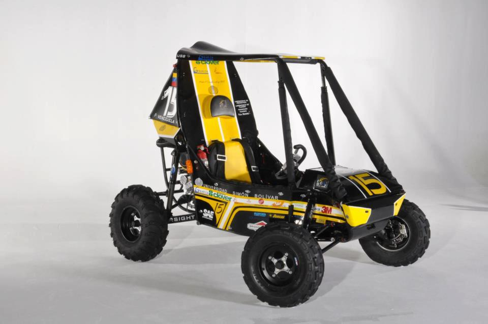
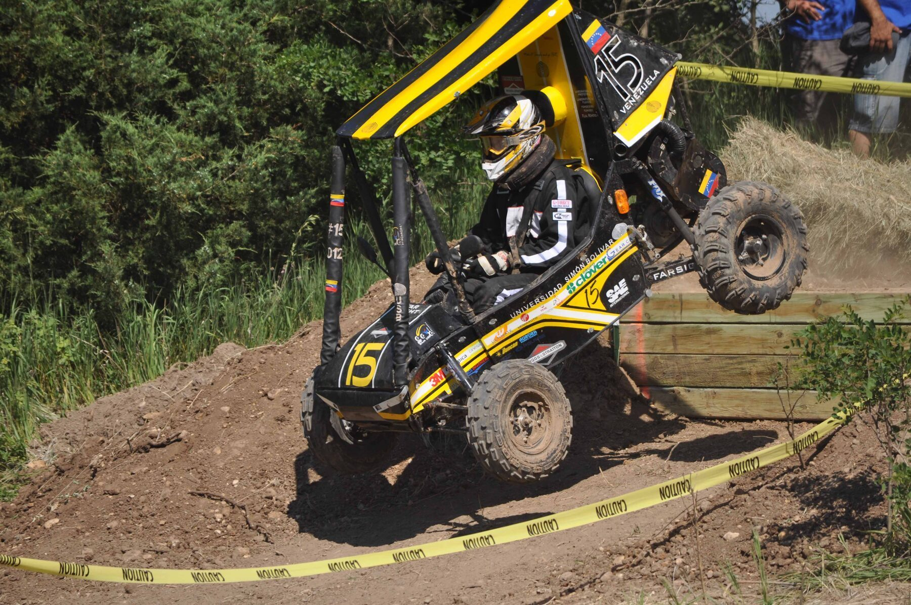
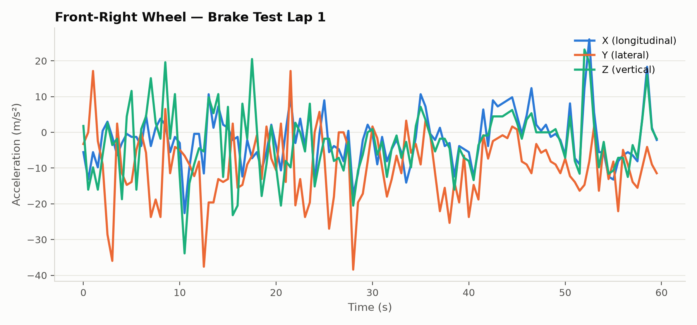

Electronic Devices for Racing Vehicles
The electronics of our Baja SAE USB off‑road car at Universidad Simón Bolívar, 2011–2014. I worked on the three boards that ran the car's instruments — a dashboard module, a steering‑wheel display and a fuel‑level sender, joined by one CAN bus — and on two tools our team used around the car: a wheel‑alignment system and a brake‑test logger. The work covered prototyping, PCB design, firmware, through‑hole and surface‑mount soldering, and testing. Each part has its own page; this one shows how they fit together in the car.
Step 1Define
The Car
Baja SAE is a collegiate engineering competition: student teams design and build a single‑seat off‑road car and race it over rough terrain. Car 15, in the photos on this page, was our 2012 prototype. Our design report for Baja SAE Wisconsin that June describes its electronics as three modules linked by a CAN bus — the fuel level, the dashboard and the steering‑wheel screen — which are the boards below. The two tools were built for working on our cars.

Our car, number 15, on a dirt course.
Why
Our cars needed electronics on two fronts. On the car: instruments and controls for the driver — speed, RPM, fuel and warning lamps on the dash and on the steering wheel — with the modules reporting over one shared CAN bus instead of each running its own wire to the cockpit. Off the car: tools for our own setup and testing — wheel alignment, until then done by hand with chalk lines and a tape measure, and a logger for the acceleration at a wheel during brake tests.
What It Had to Do
- DriverSpeed, RPM, fuel, temperature and brake warnings readable at a glance, on the dash and on the steering wheel
- ControlsTurn signals, hazards, night lights and the brake indicator worked from buttons on the wheel
- BusModules share one CAN bus: a new sensor joins as one more node, with no extra wiring back to the cockpit
- LoggingThe dashboard streams its readings out over a serial (RS‑232) port
- PowerOn‑car modules run from the car's 12 V rail through automotive regulators
- ToolsAn aligner under 3000 Bsf that fits in 50×50×50 cm, and a self‑contained brake‑test logger
Step 2Simulate
Simulated Circuits
Two of the sub‑systems were simulated as well as built. The brake‑test logger's anti‑vibration filter — the ADXL335's internal 32 kΩ against the breakout's 0.1 µF (≈49.7 Hz), then an external 10 kΩ + 1 µF RC at 15.9 Hz — comes with its simulated frequency response, and the wheel‑alignment system's ultrasonic transceiver was prototyped in Multisim.
Step 3Build
The Electronics at a Glance
Everything on the car meets at the dashboard module. It reads engine RPM from a Hall‑effect sensor on the engine, road speed from a proximity sensor on a wheel and the temperature of the CVT (the car's belt transmission) over a serial line from a separate temperature board, and it drives the needles and every lamp. The steering‑wheel display and the fuel‑level module share the CAN bus with it, so no board needs its own wiring back to the dash.
How the boards connect. The three in blue each have their own page; select one to open it. Swipe sideways to see the whole diagram.
The CAN Network
Each module broadcasts its own frame on the bus and picks the frames it needs out of the others'. Our teammate Jorge Marín set out this three‑frame scheme in March 2012:
| Module | MCU | Sends | Listens for |
|---|---|---|---|
| Dashboard | MCF51JM128 (ColdFire V1) | 0x111 — RPM, speed, temperature | 0x222, 0x333 |
| Steering‑wheel display | MC9S08DZ60 (S08) | 0x333 — its button state, on each press | 0x111, 0x222 |
| Fuel‑level module | MC9S08DZ60 (S08) | 0x222 — fuel level 0–11, every ~2 s | — |
Inside, the 2011–12 steering‑wheel display was two microcontrollers: an S08 on the bus picked out the dashboard and fuel frames and passed them over SPI to a ColdFire that drew the LCD. The dashboard also streams its readings out over RS‑232 for a PC or logger. At power‑up the dashboard blinks its four LEDs until the first CAN frame arrives, so a dead bus shows before the car moves. All three boards were laid out in Altium Designer and programmed in CodeWarrior with Processor Expert, flashed through a BDM header with a P&E Multilink.
The Modules
-
Behind the dash
Dashboard module
The hub. It reads RPM, speed and temperature, shares them on the bus as frame
0x111, and drives the two needle gauges, the headlights, night and turn lamps and four warning LEDs. Its turn signals fade in and out instead of blinking. -
On the steering wheel
Steering‑wheel display
A graphic LCD for speed, RPM, fuel and warnings, fed from the dashboard's
0x111and the fuel module's0x222, framed by four illuminated buttons for the turn signals, hazards, night lights and brake indicator. Each press goes out on the bus as0x333. -
Along the fuel tank
Fuel‑level module
A long, narrow board beside the tank float. A magnet on the float passes six Hall‑effect switches; the board turns that into a fuel level in 11 steps and broadcasts it every 2 s as frame
0x222. -
In the dash
Needle gauges
The tachometer and speedometer are moving‑coil meters re‑scaled for RPM and km/h, driven by the dashboard's PWM through an RC filter. Here a pair of gauges is opened up on the bench.
Around the Car
Two tools stayed off the bus. They served the car in the workshop and on test days:
-
On all four wheels
Wheel‑alignment system
In place of chalk lines and a tape measure: an ATmega328P, an ADXL335 and ultrasonic sensors on each wheel, linked over I²C, with an XBee radio to a handheld display for camber and toe.
-
Bolted to a wheel hub
Brake‑test logger
An Arduino, an ADXL335 and a microSD card in a hand‑formed box that bolts onto a wheel hub and logs 3‑axis acceleration through a braking run.
How It Came Together
Dates from the firmware, fabrication files and reports in the project repositories:
- 2011–12Dashboard firmware, our team's 2011–12 version: sensors, CAN, needles and lamps
- Feb–Mar 2012Steering‑wheel display firmware: buttons, backlight and LCD
- Feb–May 2012Fuel‑level module firmware
- Mar 2012The CAN frame scheme:
0x111,0x222,0x333 - Nov 2012Fuel‑level board fabrication files
- Jan–Apr 2013Dashboard board redesigned for 2012–13
- Aug 2013Wheel‑alignment system
- Oct–Dec 2013Brake‑test logger: test runs in October, report in December
Step 4Test
What Was Tested
I tested three of the sub‑systems:
- Brake‑test logger — driven and braked around Centro San Ignacio in Chacao, Caracas: a reconnaissance lap, then several braking laps per wheel (front‑right, front‑left, rear‑right), logged to the SD card and converted to m/s² with a two‑orientation calibration.
- Wheel alignment — the ADXL335 bench‑tested in its three reference orientations; the raw sensor read about 1.3 g where 1 g was expected, so each axis needs its own calibration.
- Fuel‑level module — powered on the bench: power LED on, heartbeat LED blinking at the 5 Hz sample rate. Tank‑side testing still needed the float, magnet and a calibrated fill.

Brake‑test logger, front‑right wheel, lap 1 — X, Y and Z acceleration over one run.